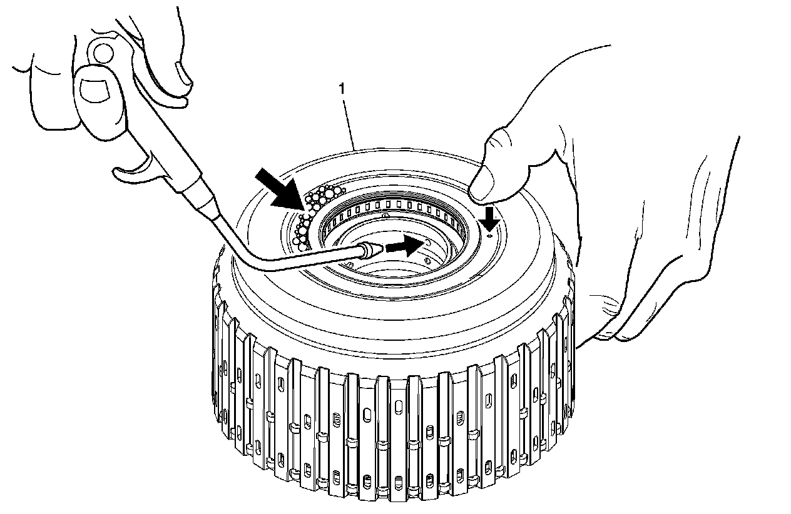
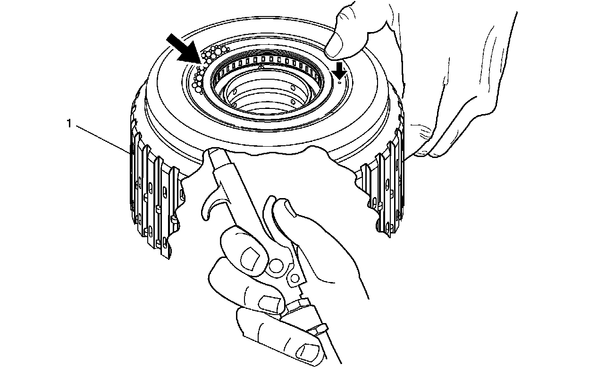
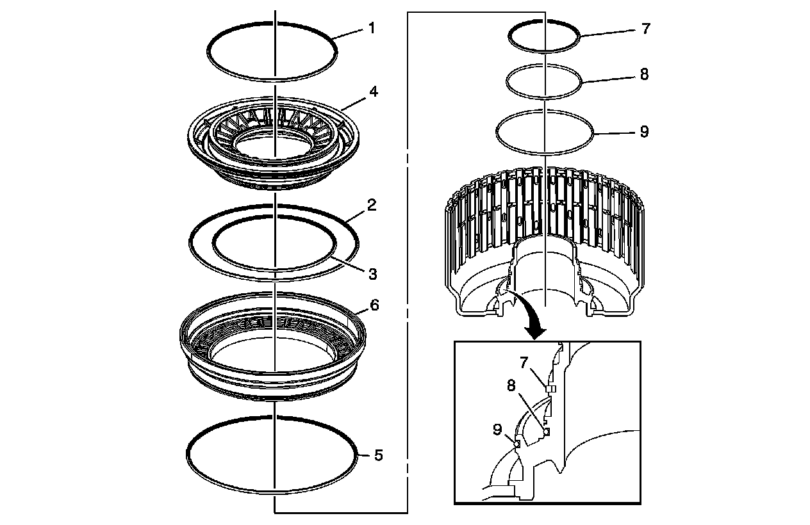
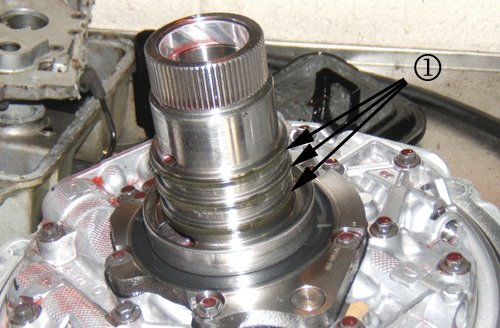
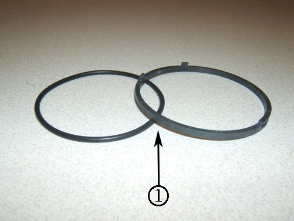
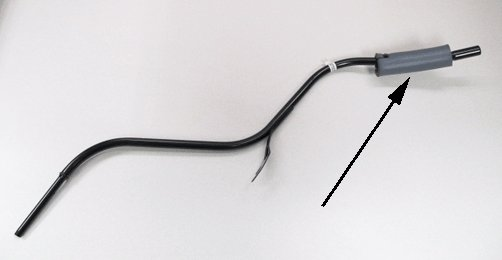
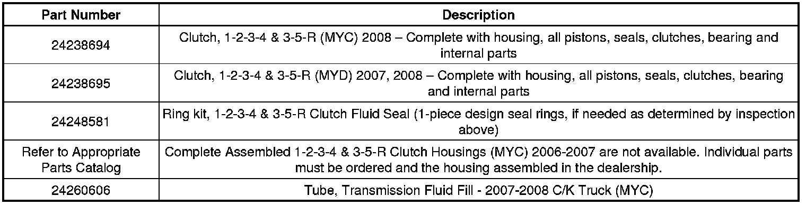
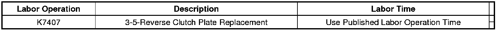

A/T - Shift Flare/Harsh 2-3 Shifts From Park To Drive
TECHNICALBulletin No.: 09-07-30-004I
Date: May 10, 2012
Subject: Slips in Reverse or Third, Delayed Reverse or Drive Engagement, DTC P0776, P2715, P2723, Harsh 2-3 Shifts (Inspect 1-2-3-4 / 3-5-R Housing and Pump Seal Rings)
Models:
2006-2009 Cadillac STS-V, XLR, XLR-V
2007-2008 Cadillac Escalade, Escalade ESV, Escalade EXT, XLR
2006-2009 Chevrolet Corvette
2007-2008 Chevrolet Silverado
2008 Chevrolet Suburban
2007-2008 GMC Sierra, Sierra Denali, Yukon Denali, Yukon XL Denali
2008 GMC Yukon XL
2008-2009 HUMMER H2
2008-2009 Pontiac G8
Equipped with 6L80 or 6L90 Automatic Transmission (RPOs MYC, MYD)
Supercede:
This bulletin is being revised to add the last Important statement under 2006-2009 Vehicles section and add the transmission filler tube to the Parts Information. Please discard Corporate Bulletin Number 09-07-30-004H (Section 07 - Transmission/Transaxle).
Condition
Some customers may comment on any of the following conditions:
- Slip when Reverse is selected or no reverse.
- Delayed engagement into reverse.
- MIL illuminated. DTCs P0776, P2715 or P2723 are found as an active or a history code in the TCM.
- Harsh shifts from second to third.
- Harsh shifts from fourth to fifth or slips in fifth.
- Slips on acceleration when passing.
2006-2008 Vehicles
Cause
This condition may be caused by a cracked 1-2-3-4 / 3-5-R clutch housing.
Correction
Important
If a cracked housing is identified, it must be replaced. Complete, assembled 1-2-3-4 / 3-5-R clutch housings are now available for most applications. These clutch housings come complete with all pistons, seals, clutches, bearing and internal parts. No assembly of the clutch housing is required before it is installed. For applications without a complete, assembled 1-2-3-4 / 3-5-R clutch housing, individual parts must be ordered and the housing assembled in the dealership.
Housing Assembled
Inspect the 1-2-3-4 / 3-5-R clutch housing for a possible cracked weld. The housing can be inspected either assembled or disassembled.

1. Apply soap compound to the weld area of the housing.
2. Hold your thumb over the air bleed passage.
3. For a fully assembled 1-2-3-4 and 3-5 reverse clutch housing, spray compressed air into the 3-5R clutch feed hole and inspect the weld area for bubbles.
4. If bubbles are detected, a new housing is required.
Housing Disassembled
Inspect the 1-2-3-4 / 3-5-R clutch housing for a possible cracked weld.

1. Apply soap compound to weld area of the housing.
2. Hold your thumb over the air bleed passage.
3. Spray compressed air into the housing and inspect the weld area for bubbles.
4. If bubbles are detected, a new housing is required.
Important
The 6L80 transmission had a design change to the 1-2-3-4 piston, 1-2-3-4 piston housing and the 3-5-R piston for the 2008 model year. Installation of a 2008, 6L80 complete housing assembly into a 2007 or older 6L80 may result in a 2-3 shift flare or 3-5-R clutch distress.
Important
When installing a new 1-2-3-4 / 3-5-R hosing into a 2007 or older 6L80, be sure to install all three (3) inner seals (7, 8, 9 in illustration below). Failure to install these seals can result in no reverse, no forward or distressed clutches.

2006-2009 Vehicles
A harsh 2-3 shift condition may be caused by leaking 1-2-3-4 and 3-5-R clutch fluid seal rings (1) on the transmission fluid pump cover assembly.

Inspect the fluid seal rings. Transmissions in 2006, 2007, 2008 and early build 2009 models used a 1- piece design seal ring in production. Starting December 2008, a 2-piece seal ring design was implemented. The 1-piece seal ring design may cause a harsh 2-3 shift due to leakage. This is typically a low mileage issue. If the seal rings are a 1-piece design they should be replaced.
Notice
The three clutch fluid seal rings are required to be installed in a specific way. Failure to install new clutch fluid seal rings in the proper orientation may cause a repeat harsh 2-3 shift. Refer to 1-2-3-4 and 3-5 Reverse Clutch Fluid Seal Ring Installation (6L80/90) in SI for correct installation.
If the seals are the 2-piece design shown below, they do not need to be replaced unless they are worn or damaged.
Important
Do not install 1-piece design seal rings on a 2-piece seal ring design pump cover. The 2-piece seal ring design pump cover can be identified by the notch in the seal ring grooves that accepts the tab on the 2-piece design seal rings.

Important
For full size trucks equipped with 6L80 (MYC), any time the transmission is removed, install a revised fluid fill tube as shown below if it is not already present. This fill tube incorporates a damper near the top of the tube that prevents resonance related damage.

Parts Information

Warranty Information

For vehicles repaired under warranty, use the table.

Disclaimer